上一篇Boot开发：App诊断请求（$10 02/82）信息"传递"给Boot方式（一）中，使用RSTCON2寄存器的USRINFO位域，存储诊断的$10 02/82信息，主要是利用了软复位，RSTCON2.USRINFO不清零的特点。本文接着讨论一种软复位不清零的方法：配置UCB17中的HF_PROCONRAM寄存器。
提示：基于Aurix tc3xx讨论。
UCB（User Configuration Blocks）：用户配置块。用于配置安装信息，位于DFlash0中，具体位置如下所示：
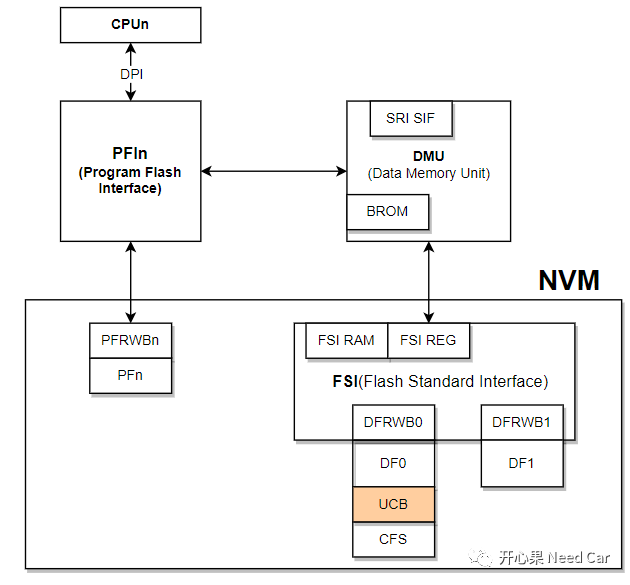
由于UCB位于DFlash0中，因此可以通过Flash Driver驱动修改UCB中的配置信息。本文就是利用了该特性，修改RAM区配置，实现软复位不清零操作。更进一步说：修改UCB17中的PROCONRAM寄存器。
1、UCB17扇区
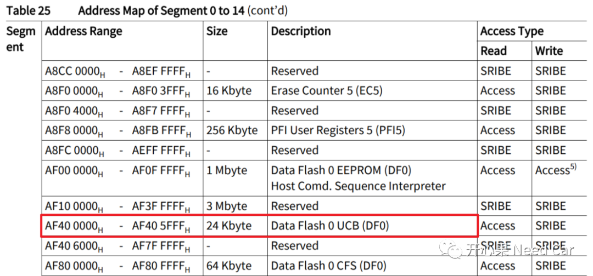
由上图可以看出，DF0包含三个部分：Data Flash 0 EEPROM、Data Flash 0 UCB、Data Flash 0 CFS。UCB的Logical Sector和Mini Sector划分如下所示：
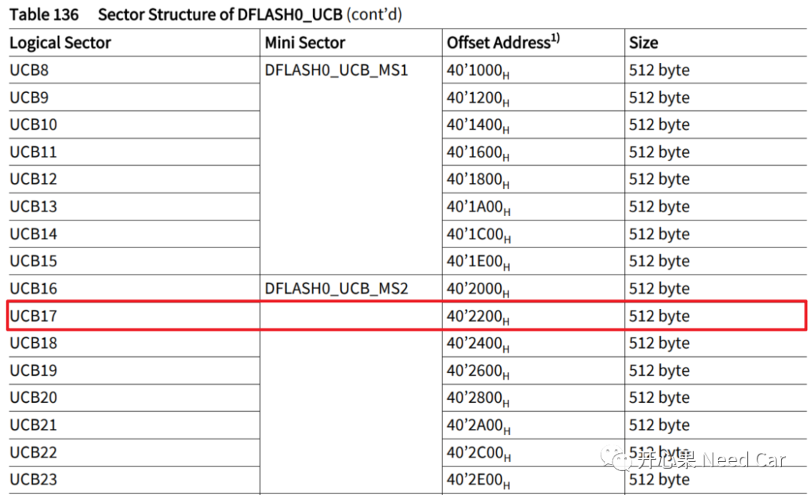
2、UCB17中的PROCONRAM寄存器
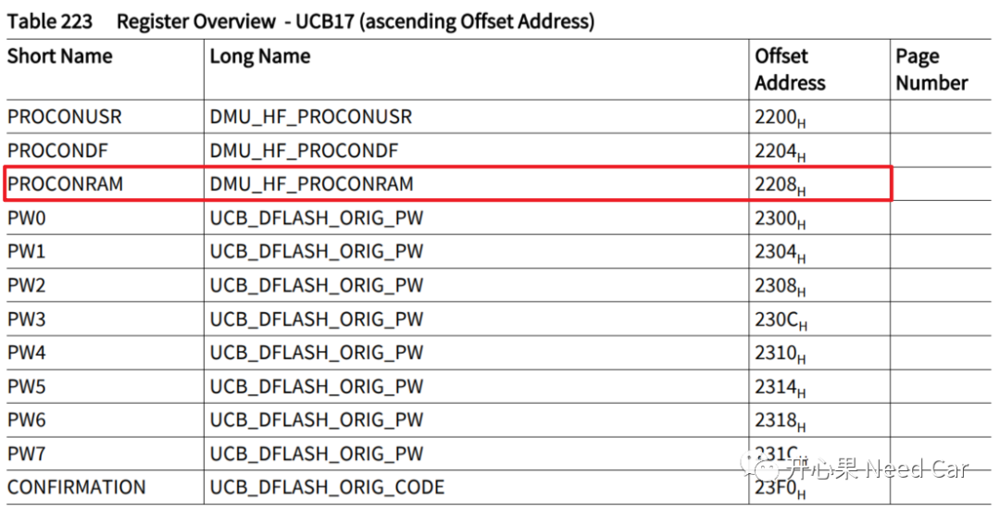
3、HF_PROCONRAM寄存器
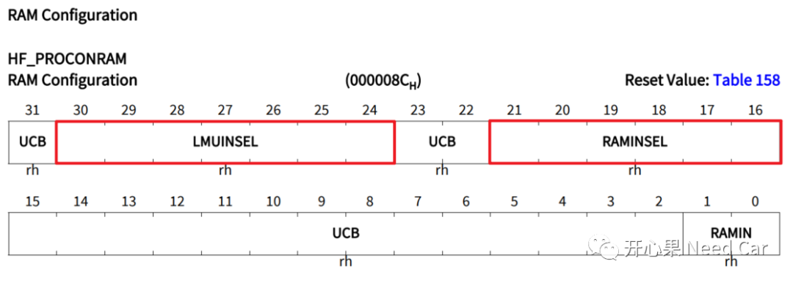
通过配置LMUINSEL或者RAMINSEL 决定哪些RAM区，软复位不清零。
配置RAMINSEL位域，可以决定CPU对应的PSPR、 DSPR、PCACHE、 DCACHE是否软复位清零。
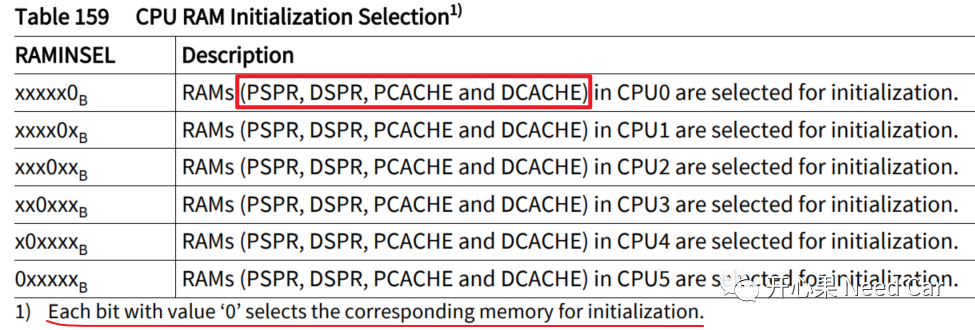
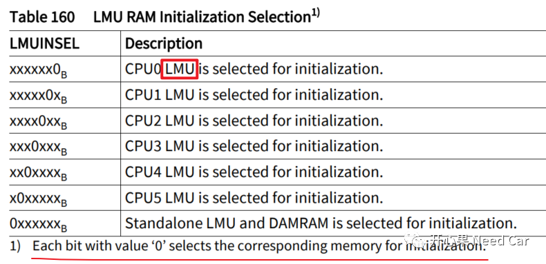
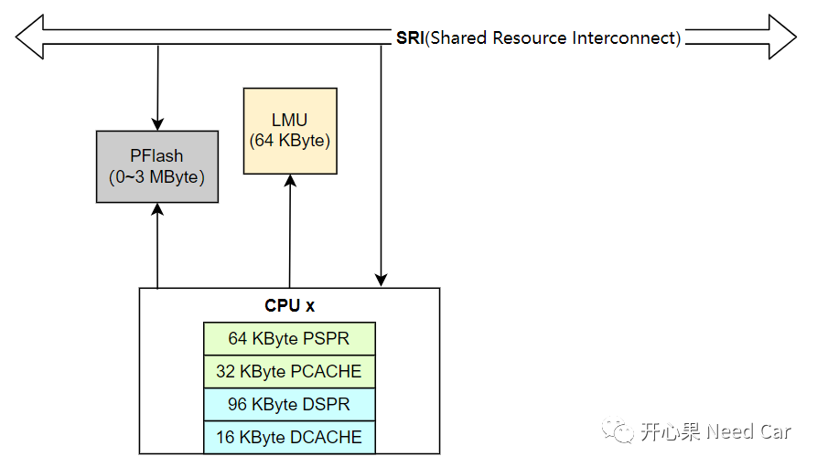
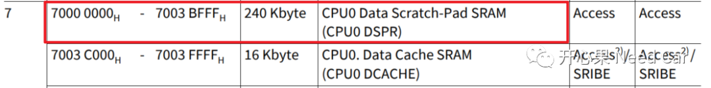
验证结果：
（1）确认UCB17的PROCONRAM寄存器已经配置成预期的0x00010000（本文利用Flash Driver写入），如下所示：
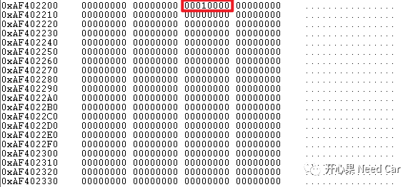
volatile uint32* run_Cnt_CPU0_DSPR = (uint32*)0x70010000;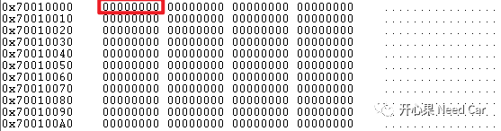
2、对参数run_Cnt_CPU0_DSPR进行两次累加计算
(*run_Cnt_CPU0_DSPR)++;(*run_Cnt_CPU0_DSPR)++;
运行后，0x70010000地址数据为2，如下所示：
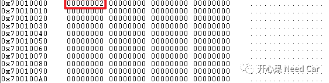
3、进行软复位（本文用Debug复位）
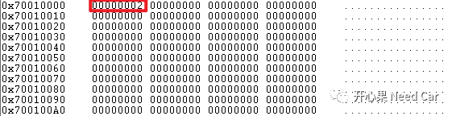
本文代码
void core0_main(void){volatile uint32* run_Cnt_CPU0_DSPR = (uint32*)0x70010000;IfxCpu_enableInterrupts();/* !!WATCHDOG0 AND SAFETY WATCHDOG ARE DISABLED HERE!!* Enable the watchdogs and service them periodically if it is required*/IfxScuWdt_disableCpuWatchdog(IfxScuWdt_getCpuWatchdogPassword());IfxScuWdt_disableSafetyWatchdog(IfxScuWdt_getSafetyWatchdogPassword());/* Wait for CPU sync event */IfxCpu_emitEvent(&cpuSyncEvent);IfxCpu_waitEvent(&cpuSyncEvent, 1);UCB17_DataArr[2] = 0x00010000;UCB17_DataArr[124] =0x43211234;/* Flash the Data Flash memory and verify the written data */writeDataFlash();verifyDataFlash();(*run_Cnt_CPU0_DSPR)++;(*run_Cnt_CPU0_DSPR)++;while(1){}}
RSTCON2寄存器受CPU的"内狗"的保护，操作时，注意Cpu Endinit操作，示例代码如下所示：
void SCUResetCon2(void){uint16 password;password = IfxScuWdt_getCpuWatchdogPasswordInline(&MODULE_SCU.WDTCPU[IfxCpu_getCoreIndex()]);IfxScuWdt_clearCpuEndinitInline(&MODULE_SCU.WDTCPU[IfxCpu_getCoreIndex()], password);MODULE_SCU.RSTCON2.B.USRINFO = 0x1002;IfxScuWdt_setCpuEndinitInline(&MODULE_SCU.WDTCPU[IfxCpu_getCoreIndex()], password);}

参考资料
SIMPLE TITLE
（1）Infineon-AURIX_TC3xx_Part1-UserManual-v01_00-EN.pdf
往期精彩回顾